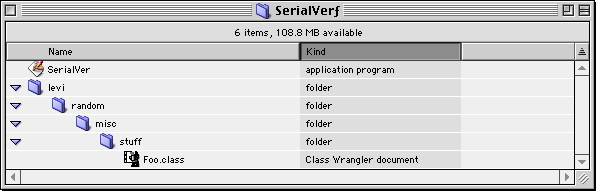

Legacy Document
Important: This document is part of the Legacy section of the ADC Reference Library. This information should not be used for new development.
Current information on this Reference Library topic can be found here:
ADC Home > Reference Library > Technical Q&As > Legacy Documents > Java >
Important: This document is part of the Legacy section of the ADC Reference Library. This information should not be used for new development.
Current information on this Reference Library topic can be found here:
|
|
Q: Is there a tool to generate the A: Yes there is. The classes for it are included
as part of the standard MRJ install. To run the
To create a JBound application to run the
You will need to add the classes you are concerned with to the classpath. This can be done in a couple ways:
Once you are done configuring the settings in JBindery, save the settings as an application, and use this resulting JBound application to launch the
As an example, I added a manual entry of By adding a manual entry of |

[May 17 1999] |
|